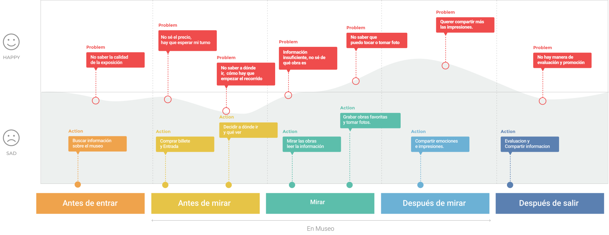
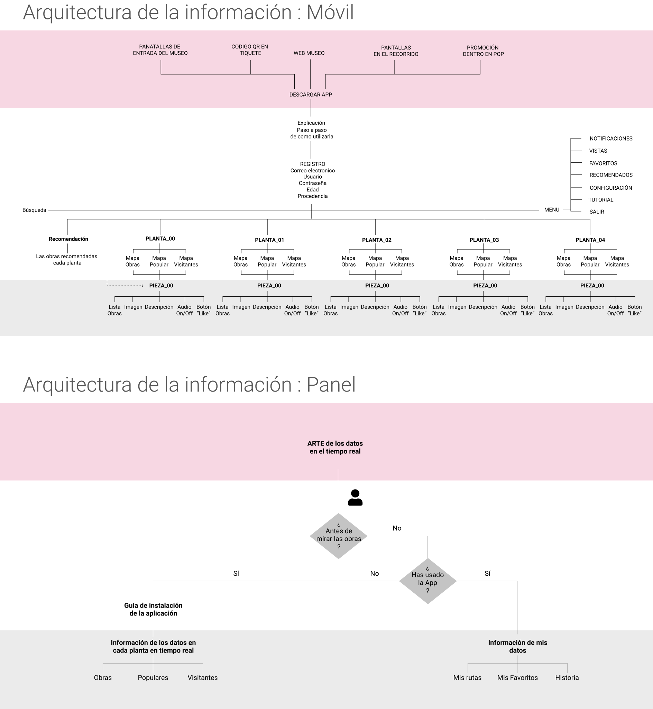
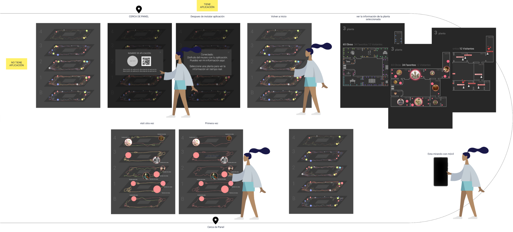
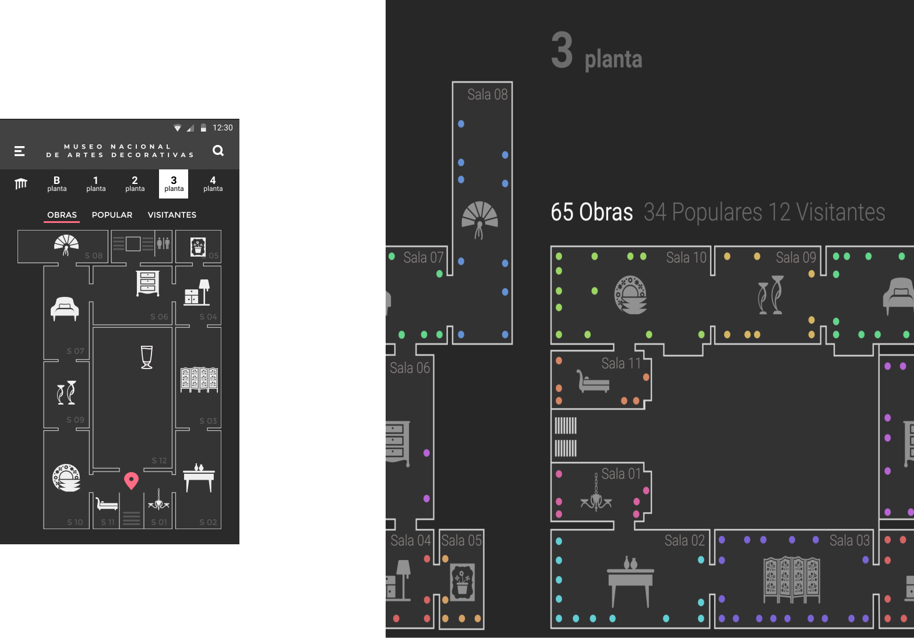
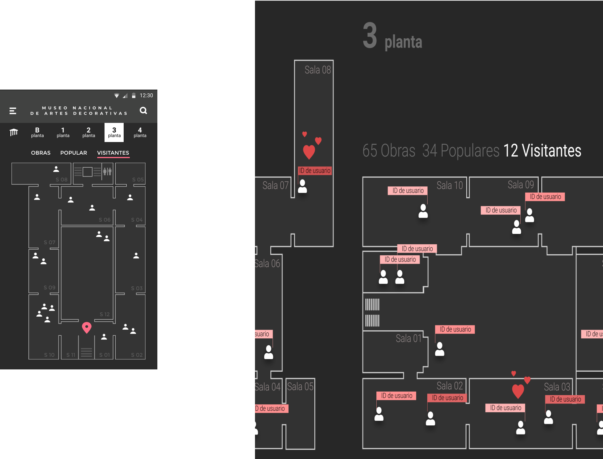

A project at the Museo Nacional de Artes Decorativas de Madrid (National Museum of Decorative Arts of Madrid)
Why is our project interesting and can it help the National Museum of Decorative Arts to offer a better experience to its visitors?
It's an intelligent guide, which through beacon technology offers users a personalized experience, in which all the information offered is contextual, that is, it depends on where they are and what object they are viewing.
A map shows real-time data obtained thanks to beacons. This offers users new ways of understanding and interacting with the museum.
The museum will be able to use the data collected its analysis. This way they could plan the exhibitions knowing the most popular works, those that have been liked more, the most visited rooms and at what times and days these things happen.
This project was part of the coursework for the in the Interaction Design Master Degree, 'Escuela Superior de Diseño de Madrid' 2019, by Ji Yeon Yu, Patricia Moreno, Ángela Torres and Teresa Sempere.
Development
Journey map

Information architecture

How does it work?
The project has two related interfaces. The first is the application for visitors, which they can access from their phone. The visit to the museum will become a unique experience. The app will display information automatically according to the work being viewed. The user will be able to like their favourite pieces, learn more about them and locate themselves through the map.
The second interface is a panel located in the hall of the museum. In this, the information of the interactions that users make on their devices (linking, moving ...) will be displayed in real-time. The visitor will also be able to interact directly with the screen and see their journey.
How is it possible? Beacons
A beacon on each floor. This will automatically return relevant information about the user, such as opening the corresponding view on the map, and the notifications that are necessary.
Beacons on the objects, logically distributed according to the exhibition. These will automatically return relevant information to the visitor about the different objects as they go through the exhibitions.
With three of the beacons placed we will be able to know the location of the users of the application (through triangulation). In this way, we can offer the visitor their position on the map, know where all the users are, which can be useful for the museum as well (flow of visitors, rooms with a higher density of people ...)
The app
You can try the prototype here
The digital panel

You can try the portotype here
Functionalities
It is interesting to compare the parallelism of what appears on the visitors' device and how it is reflected on the digital panel. We can see how the works that exist on each floor are represented, the visitors to each room and the likes they give, as well as which works are the ones that accumulate the most interactions.
Artworks and pieces

Likes
Visitors
